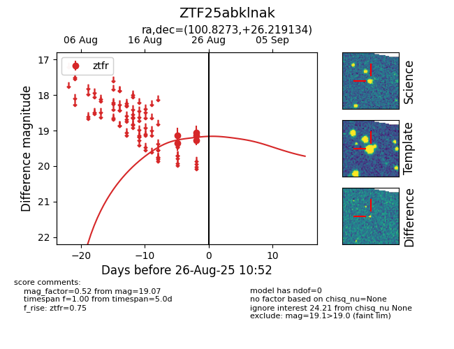

Target ZTF25abklnak at 2025-08-26 10:55, see:
FINK: fink-portal.org/ZTF25abklnak
Lasair: lasair-ztf.lsst.ac.uk/objects/ZTF25abklnak
ALeRCE: alerce.online/object/ZTF25abklnak
alt names
ZTF25abklnak (ztf,fink)
coordinates:
equatorial (ra, dec) = (100.8272,+26.21926)
galactic (l, b) = (188.4779,+9.97059)
photometry
last ztfr=19.07
5 ztfr detections
